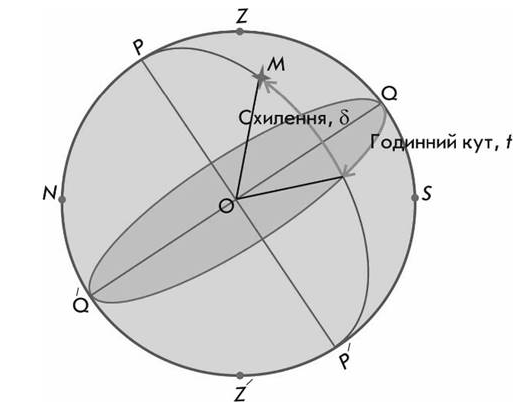
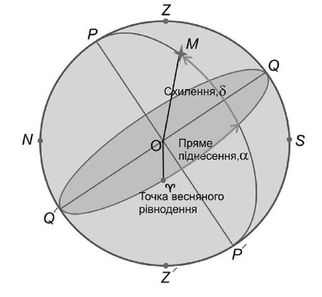

Системи небесних координат#
Системи небесних координат використовують в астрономії для опису положення світил на небі або точок на уявній небесній сфері. Координати світил або точок задаються двома кутовими величинами (або дугами), які однозначно визначають положення об'єктів на небесній сфері. Таким чином, системи небесних координат є сферичними системами координат, в яких перша координата — відстань — часто невідома і не відіграє ролі. Ці системи відрізняються одна від одної вибором основної площини та початку відліку на ній.
На небесній сфері розрізняють кілька систем координат:
горизонтальну
першу екваторіальну
другу екваторіальну
екліптичну
галактичну
Горизонтальна система координат#
Горизонтальна система координат - це система небесних координат, в якій основною площиною є площина математичного горизонту, а полюсами — зеніт і надир. Горизонтальна система координат завжди топоцентрична, тобто спостерігач знаходиться у фіксованій точці на поверхні Землі.
Математичний горизонт ділить поверхню горизонтальної системи координат на дві півкулі:
Видиму для спостерігача (з вершиною в зеніті)
Невидиму (з вершиною в надирі)
Важливо розуміти, що математичний горизонт не збігається з видимим горизонтом спостерігача через нерівності поверхні Землі та викривлення променів світла в атмосфері.
У горизонтальній системі координат положення світила визначається двома координатами:
Висота світила над горизонтом \(h\). Висота h відраховується по вертикалу від площини математичного горизонту зі знаком "плюс" у видимій півкулі небесної сфери (від 0 до +90°) і зі знаком "мінус" — у невидимій (від 0 до –90°).
Азимут \(A\) - кутова відстань, яка відраховується по математичному горизонту від точки півночі до вертикала світила. Початковим напрямком є північ. Азимут вимірюється за годинниковою стрілкою, тобто в напрямку сходу:
0° відповідає північному напрямку,
90° – сходу,
180° – південному,
270° – заходу.
Іноді ще використовують зенітну відстань \(z\). Зенітною відстанню \(z\) світила називається дуга вертикального кола від зеніту до світила, або кут між прямовисною лінією і напрямком на світило. Фактично, \(z = 90° - h\), тому знаючи \(h\), ми знаходимо зенітну відстань.
Горизонтальна система координат є локальною – її координати залежать від місця спостереження та моменту часу, тому однаковий об'єкт має різні координати для спостерігачів, розташованих у різних місцях.
Внаслідок обертання Землі навколо своєї осі всі світила на небесній сфері здійснюють добовий рух навколо осі світу, роблячи один оберт за добу (зоряна доба). При тривалому спостереженні можна помітити, що зорі начебто обертаються навколо Північного полюса світу (умовно - навколо Полярної зорі).
Недоліком горизонтальної системи координат є те, що кожна з координат світила безперервно змінюється внаслідок обертання небесної сфери.

Image: Горизонтальна система координат. Altitude - висота світила над горизонтом. Azimuth - азимут. By TWCarlson, CC BY-SA 3.0, Link to image
Екваторіальна система координат#
В екваторіальній системі небесних координат основною площиною є небесний екватор. Існує два варіанти цієї системи: перша екваторіальна система координат та друга екваторіальна система координат. Обидві системи використовують одну й ту саму фундаментальну площину (площину небесного екватора) та одні й ті самі небесні полюси, але відрізняються вибором початку відліку одного з кутів. Обидві системи є геоцентричними, тобто їх центр розміщується в центрі Землі.
Перша екваторіальна система координат використовує:
Схилення \(\delta\) – кут між площиною небесного екватора й напрямком на об’єкт (аналог широти на Землі). Вимірюється від небесного екватора вздовж кола схилень:
\(\delta = 0^\circ\) на небесному екваторі,
\(\delta = +90^\circ\) на Північному небесному полюсі,
\(\delta = -90^\circ\) на Південному небесному полюсі.
Використовують ще таку координату, як полярна відстань \(p\), яку визначають за формулою \(p = 90^\circ - \delta\).
Геометричним місцем точок з однаковими схиленнями є добова паралель - мале коло небесної сфери, площина якого паралельна небесному екватору.
Годинний кут \(t\) – дуга небесного екватора від точки перетину небесного екватора із небесним меридіаном до кола схилення світила, вимірюється в годинній мірі (години, хвилини, секунди). Позитивне значення годинного кута в напрямку добового обертання небесної сфери до кола схилення світила (Земля обертається із заходу на схід, а небесна сфера, відповідно, із сходу на захід, тому і позитивний відлік годинного кута повинен йти із сходу на захід). Унаслідок обертання годинний кут одного й того самого світила протягом доби змінюється в межах від 0 до 24 год. Годинний кут залежить не тільки від часу спостережень, а й від місця спостережень на земній поверхні.

Image: Перша екваторіальна система координат
Друга екваторіальна система координат використовує:
Схилення \(\delta\) – кут між площиною небесного екватора й напрямком на об’єкт (те ж саме, що і в першій екваторіальній системі координат).
Пряме сходження (піднесення) \(\alpha\) - дуга небесного екватора від точки весняного рівнодення до кола схилення світила, вимірюється в годинній мірі (години, хвилини, секунди). Пряме сходження відраховується в годинній мірі в напрямку, протилежному напрямку обертання небесної сфери (тобто позитивний напрямок - це напрямок із заходу на схід) від площини, що проходить через вісь світу і точку весняного рівнодення, і яка обертається разом з усією небесною сферою. Для різних світил вона має значення від 0 до 24 год. Проте, на відміну від годинних кутів, величина прямого сходження одного й того самого світила не змінюється внаслідок добового обертання небесної сфери й не залежить від місця спостережень на поверхні Землі (адже як світило обертається, так і точка весняного рівнодення так само обертається разом із небесною сферою і їх відносних рух за відсутності інших факторів дорівнює нулю).
Схилення \(\delta\), полярна відстань \(p\) і пряме сходження \(\alpha\) світил під час добового обертання небесної сфери не змінюються, але можуть змінюватися внаслідок власних рухів світил, не пов'язаних з добовим обертанням небесної сфери.
Як результат, зоряні карти будуються на сітці другої екваторіальної системи координат, а не першої. Користуючись схиленням \(\delta\) і прямим сходженням \(\alpha\), можна скласти списки зір у порядку зростання їх прямого сходження. Такі списки називають зоряними каталогами.

Image: Друга екваторіальна система координат
Екліптична система координат#
В екліптичній системі основною площиною є площина екліптики. Ця система була зручною тому, що стародавні кутомірні інструменти, такі як армілярна сфера, були пристосовані для вимірювання безпосередньо екліптичних координат Сонця, планет і зір. Як наслідок, екліптична система є основою всіх старовинних зоряних каталогів й атласів зоряного неба.
Галактична система координат#
Галактична система координат - це система небесних координат, яка використовує як основну площину відліку площину Галактики (площину Чумацького Шляху). Початком координат цієї системи є центр Сонячної системи
Головні координати:
Галактична широта \(b\) - кутова відстань світила від галактичної площини
Вимірюється від -90° до +90°
Додатні значення - у напрямку північного галактичного полюса
Від'ємні значення - у напрямку південного галактичного полюса
Галактична довгота \(l\) - кут у галактичній площині
Вимірюється від 0° до 360°
Відлічується від напрямку на центр Галактики
Зростає проти годинникової стрілки, якщо дивитися з північного галактичного полюса